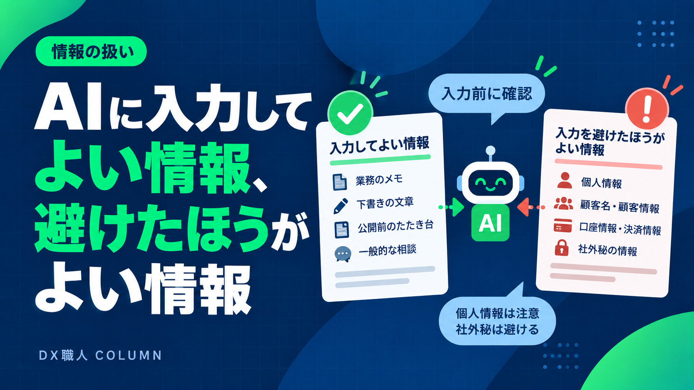

AIに入力してよい情報、避けたほうがよい情報
顧客情報や図面をAIに渡して大丈夫なのか。研修でも必ず出る質問です。「全部だめ」でも「全部よい」でもなく、線を引く。その考え方と、社内ルールにするまでの手順をご紹介します。

この記事の要点
- 最初に「入力してよい情報の範囲」を決める
- お客様の氏名や連絡先は、伏せてから渡す方法がある
- 使うAIサービスの設定と利用規約を、業務で使う前に確認する
- 個人の判断に任せず、一枚のルールにして共有する
「何を入れるか」を、最初に決める
AIを仕事で使い始めるとき、最初に決めたいのが「入力してよい情報の範囲」です。これを決めずに使い始めると、人によって扱いがばらつき、あとから「あれは入れてよかったのか」と不安になります。
考え方はシンプルです。業務の内容そのものに関わる情報と、特定の個人や取引先を識別できる情報を分けます。前者はAIに渡しても業務が進む情報、後者は渡さなくても業務が進むことが多い情報です。
たとえば不動産の物件紹介文をつくる場合。間取り、向き、駅からの距離、設備といった情報は、紹介文をつくるために必要です。一方、売主様の氏名や連絡先は、紹介文をつくるためには必要ありません。建設の見積書を整理する場合も同じで、品目や金額は必要ですが、施主様の個人情報は多くの場合なくても整理できます。
入力してよい情報の例
業種によって細かな違いはありますが、一般に次のような情報は、AIに渡して業務を進めやすいものです。
現場や物件の作業内容に関するメモ。たとえば「配筋検査を実施」「外壁塗装の見積」といった、仕事そのものの内容です。
公開前のたたき台や下書き。物件紹介文、お客様への返信文の案など、これから整えていく文章です。
自社で決めている手順や様式。日報の項目、見積書の書式など、社外秘ではない業務のルールです。
一般的な相談。「こういう場面では、どう書けばよいか」といった、特定の個人に結びつかない質問です。
これらは、個人や取引先を特定できる情報を含まなければ、AIに渡しても業務上の問題が起きにくいものです。
避けたほうがよい情報の例
逆に、次のような情報は、AIに渡す前に立ち止まって考えます。
お客様や取引先の氏名、住所、電話番号、メールアドレス。いわゆる個人情報です。
口座情報、クレジットカード番号、決済に関する情報。
社外秘の情報。未公開の価格戦略、取引条件、社内の人事に関わる情報など。
契約書や図面のうち、お客様の個人情報や、公開を前提としていない設計情報が含まれるもの。
これらは「絶対に使えない」というわけではありませんが、渡す必要があるのか、伏せてから渡せないか、使うサービスの条件はどうなっているか、を確認してから扱います。
伏せてから渡す、という方法
多くの業務では、個人情報がなくても作業は進みます。そこで有効なのが、必要な部分だけを伏せてからAIに渡す方法です。
お客様の名前は「A様」に置き換える。住所は番地を省いて「大阪市中央区」までにする。電話番号やメールアドレスは削る。物件名を「サンプルハイツ」のような仮の名前にする。こうした置き換えをしてからAIに渡し、返ってきた下書きに、あとから正しい名前を入れ直します。
最初は手間に感じるかもしれませんが、慣れると数秒で済みます。「AIに渡す前に、名前と連絡先を消す」を習慣にするだけで、扱える業務の範囲が大きく広がります。
図面の場合は、図面そのものを渡すのではなく、「この図面から読み取った情報」をメモにして渡す、という方法もあります。たとえば「2階建て、延床120平米、LDK18畳」のように、必要な数値だけを書き出します。
使うサービスの設定を確認する
AIサービスによっては、入力した内容がサービスの学習に使われる設定と、使われない設定を選べるものがあります。業務で使う前に、利用しているサービスがどちらの設定になっているかを確認しておきます。
あわせて、利用規約やプライバシーポリシーで、入力した内容がどのように扱われるかを確認します。無料プランと有料プラン、個人向けと法人向けで、扱いが異なることがあります。
この確認は、一度やっておけば済みます。確認した日付と内容をメモに残しておくと、あとから「どの設定で使っているのか」を説明できます。
なお、サービスの仕様は変わることがあります。年に一度は見直すつもりでいると安心です。
社内のルールとして残す
ここまでの内容を、個人の判断に任せると、人によって扱いがばらつきます。そこで、「入れてよいもの・避けるもの」を一枚にまとめて、チームで共有します。
書く内容は、次の4つで十分です。1. 入れてよい情報の例。2. 避ける情報の例。3. 伏せてから渡す場合の置き換え方。4. 使っているサービスと、確認した設定。
A4一枚、箇条書きで構いません。大事なのは、全員が同じものを見て、迷ったときに戻れる場所があることです。
ルールは最初から完璧でなくてよく、使いながら足していきます。「この書類はどうするか」という質問が出たら、その答えをルールに追記します。半年も使えば、自社に合ったルールができあがります。
よくある質問と、その考え方
研修で、情報の扱いについてよく聞かれる質問と、考え方の目安をまとめます。
「図面は渡してよいか」。図面そのものには、お客様の氏名や住所が記載されていることが多く、また設計情報は公開を前提としていません。原則として図面のファイルを丸ごと渡すのではなく、必要な数値だけを書き出して渡す方法をおすすめしています。
「過去の見積書を参考として渡してよいか」。取引先名と金額が含まれるため、社外秘にあたる可能性があります。書式や項目の構成を学ばせたい場合は、取引先名と金額を仮のものに置き換えたサンプルをつくって渡します。
「社員の名前は個人情報か」。氏名は個人情報にあたります。日報で担当者名を扱う場合は、イニシャルや社員番号に置き換えるか、AIに渡す部分からは外して、あとから入れ直します。
「お客様からのメールをそのまま渡して返信案をつくってよいか」。メールには氏名、連絡先、場合によっては住所が含まれます。本文の用件だけを抜き出して渡し、宛名や署名は自分で付けるのが安全です。
ルールづくりの進め方
社内ルールをつくるときは、次の順番で進めるとまとまりやすくなります。
1. いまAIで扱いたい業務を3つほど挙げます。見積書の整理、日報の下書き、物件紹介文など。
2. それぞれの業務で、AIに渡す情報を書き出します。
3. 書き出した情報のうち、個人や取引先を特定できるものに印をつけます。
4. 印をつけた情報について、「渡さなくても進むか」「伏せてから渡せるか」を判断します。
5. 結果を一枚にまとめ、使うサービスと設定を添えて、チームに共有します。
この手順は、半日あれば一通り終わります。完成度よりも、まず一枚つくって共有することを優先してください。使いながら直していくほうが、最初から完璧を目指すより早く定着します。
「使わない」より「線を引いて使う」ほうが安全な理由
情報の扱いが不安だからAIを使わない、という判断も一つの選択です。ただ、実際の職場では、会社としてルールがなくても、社員が個人のスマホでAIを使い始めていることが珍しくありません。その場合、何を入力しているかを会社が把握できず、かえって管理が難しくなります。
会社として「入れてよい情報・避ける情報」を示し、使ってよいサービスを決めておくほうが、結果として安全です。社員は迷わずに使えますし、会社は何がどこに渡っているかを把握できます。
線を引く、というのは、使わせないための線ではなく、安心して使うための線です。この考え方で進めると、現場の反発も少なく、定着しやすくなります。
研修で扱うこと
DX職人のAI実践研修では、この情報の扱いについても、受講される方の業務に合わせて一緒に整理します。「この書類は渡してよいか」「どこを伏せるか」を、実際の書類を見ながら判断し、社内ルールのたたき台までつくります。
情報の扱いが決まると、AIを使うときの迷いが減ります。迷いが減ると、使う頻度が上がり、効果が出やすくなります。最初に線を引くことは、遠回りに見えて、いちばんの近道です。
「顧客情報があるから、うちではAIは使えない」と感じている方こそ、まず線を引くところから始めてみてください。渡さなくても進む業務は、思っているより多くあります。